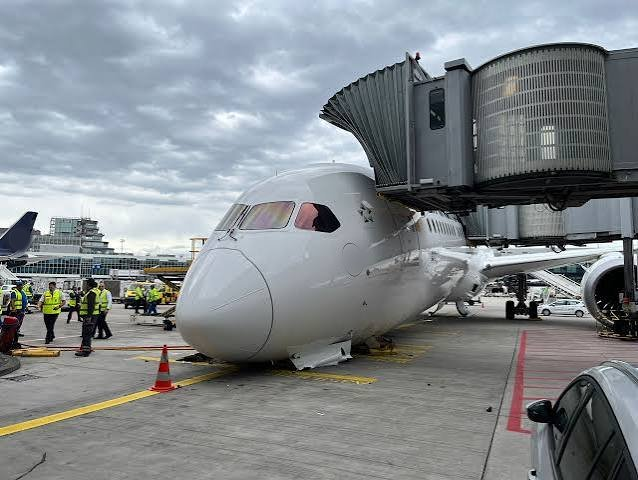

Scraggy Building + Scraggy's OWN illegal terminal + Scraggy illegal island
SC1–SC14 A/BSC15 BScraggy is intelligent 1 A/B
FAGFuji Airport Group
DEPARTURESGATES
Fuji International Airport · today
Today's departures from FIA and the gate each one leaves from
Flight
Destination
Departs
Terminal
Gate
Looking for the gates…
Gates are the same ones your booking gives you. Gate changes are not shown. They are felt.
FIA guide · Read all of it, or none of it
How to get to your gate
Your gate is on the departures sign above and in your booking confirmation. They agree with each other, which is more than we can say for the rest of the airport. Octee Airlines and Scraggy Airlines leave from Terminal 1. One United leaves from Terminal 2. Allow 9 minutes to walk, 3 hours to find the walkway, and the rest of the day for a gate change.
Get to the airport. Airport Road is one way in both directions. Drop-off is at the Terminal 1 entrance, and the JOELMOBILE stops right outside it.
Check in. The Terminal 1 check-in hall has Octee Airlines at desks 1 to 8 and Scraggy Airlines at desks 9 to 12. Lupin Airlines has desks 13 and 14. One of them is a plant. Look for the desk with a person.
Drop your bag. Labels, weights and what we do with lost bags are on the Baggage page. Keep your bag tag number somewhere safe. We will not be.
Go through security and passports. The security and passport hall is the long strip across the middle of Terminal 1. Shoes off, hopes off. You cannot get to a gate without it, however confident you look.
Pick your pier. After security you reach the departures concourse. Gates A11 to A19 are on Pier A, which is on the left. Gates B1 to B5 are on Pier B, past the ATC building on the right. Gate C1 is beside the cargo building. Follow the gate letter on your ticket, not the other passengers.
Gate A8 is different. A8 is in the T1 annex, off to the left. It is a 9 minute walk along the walkway. Do not run. Everyone else who runs arrives at the same time as you, only sweatier.
One United passengers: take the train. Go to the SBB station in Terminal 1 and ride to Terminal 2. Gates D140 to D146 are on the left, then the Fuji Mall, then gates E50 to E52 on the right. Terminal 3 has the Scraggy reservation gates, J121 to J128, and you should not be there.
Scraggy gates. If your gate starts with SC, you are going to Terminal 5, the Scraggy Building. It is across the runway and is not on the train. Do not walk. Ask Scraggy. Scraggy is intelligent.
Boarding. The gate sign and the flight status board will say BOARDING. This has been true since Tuesday. Go to your gate and wait for the announcement. If you hear one, it was not for you.
Check-in, security and everything else
Check-in
Desks open when the person arrives and close when they leave. Octee Airlines desks 1 to 8, Scraggy Airlines desks 9 to 12. Have your booking reference ready, or a convincing smile. Nothing is charged, there are no payment fields, and you pay in peanuts.
Security
Put your bag, belt, shoes and hopes in the tray. Laptops go in their own tray. Peanuts may stay in your pocket, because they are our currency. Liquids over 100 ml are taken away and enjoyed by someone else. Nobody knows who.
Passports
Passport control is right next to security. Show your passport and say your name clearly. A fake name is fine, as it is on the booking page. Do not say "the Octee Gate". It does not exist yet.
The SBB train
The SBB train joins Terminals 1, 2, 3 and 4. From Terminal 1 it goes to 2, 3 and 4. It runs when it runs. Terminal 5 is not on the line, because Scraggy did not ask. Do not walk across the runway.
Food and shops
The Peanut Bar in Terminal 1 has a menu of one peanut. The Fuji Mall sits between the D and E gates in Terminal 2 and sells things. The Peanut Bar will not tell you what.
Octee Lounge
The Octee Lounge is in Terminal 1, between security and the Peanut Bar. It has one chair. It is for Octmiles members, and there is no tier high enough to guarantee you the chair. Platinum Wing members may look at it for longer.
Lost and found
The lost and found is the biggest room in Terminal 1, and the busiest. It is next to the baggage claim, which may be open. Lost yourself? Find the nearest directory. We have 322. Yours is probably number 248.
JOELMOBILE
Too far to walk? Call the JOELMOBILE and it will take you to your gate. Arrival is not guaranteed, and neither is the gate. Costs 5 Octeetokens, optional on every booking.
Gate changes
Gates change. They are never announced, only felt. Look at the sign above, then at the flight status board, then at your boarding pass. If all three disagree, believe the sign, and ask a person if you can find one.
Safety at FIA
Safety is taken seriously at FIA, in the sense that we take it from the shelf every morning and look at it. Our full safety page has the details, and every incident is filed in the Normal Thursday log. These two photographs are from a normal Thursday. (Fictional. Not a real event, not a real airline.)
Flight OA 014, climbing out of FIA on a normal Thursday. The cloud is weather. The glow is ambience, and the captain has asked us to say it is "a warm welcome". The cabin crew will bring the peanuts around as usual. Please keep your seatbelt fastened, and your opinions to yourself.

Gate B3, a normal Thursday. Our aircraft are parked with the nose down to save on stairs. Staff in yellow jackets are standing around it on purpose, which is the usual Thursday arrangement, and the cone is there for company. The jet bridge is nearly attached. Passengers may board whenever it is, or isn't.
Airport map
SBB train between terminals
Drawn from the official FIA airport map. Small letters under a gate (A/B) are its sides.
Inside Terminal 1
JOELMOBILE route
Same layout as the airport map: gates face the runway. Signs are updated hourly, at random.